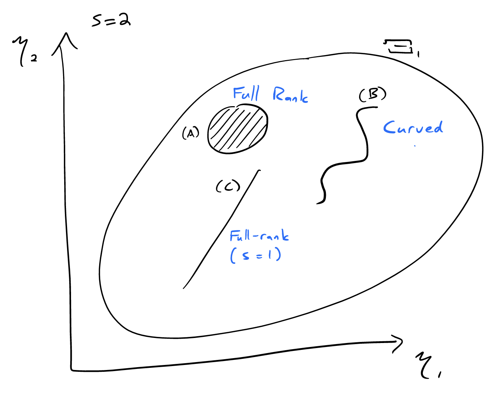

Completeness, Ancillarity, and Basu’s Theorem
\[ \newcommand{\cB}{\mathcal{B}} \newcommand{\cF}{\mathcal{F}} \newcommand{\cN}{\mathcal{N}} \newcommand{\cP}{\mathcal{P}} \newcommand{\cX}{\mathcal{X}} \newcommand{\EE}{\mathbb{E}} \newcommand{\PP}{\mathbb{P}} \newcommand{\RR}{\mathbb{R}} \newcommand{\ZZ}{\mathbb{Z}} \newcommand{\td}{\,\textrm{d}} \newcommand{\simiid}{\stackrel{\textrm{i.i.d.}}{\sim}} \newcommand{\eqas}{\stackrel{\textrm{a.s.}}{=}} \newcommand{\eqPas}{\stackrel{\cP\textrm{-a.s.}}{=}} \newcommand{\eqmuas}{\stackrel{\mu\textrm{-a.s.}}{=}} \newcommand{\eqD}{\stackrel{D}{=}} \newcommand{\indep}{\perp\!\!\!\!\perp} \DeclareMathOperator*{\minz}{minimize\;} \newcommand{\Var}{\textnormal{Var}} \newcommand{\Cov}{\textnormal{Cov}} \newcommand{\Corr}{\textnormal{Corr}} \]
Check that Laplace median problem is on HW 2 or other, check that minimality for uniform scale is in previous lecture.
1 Completeness
As we have seen, for a given statistical problem we may have many different sufficient statistics, some of which reduce the data more than others. We usually want to look for one that is minimal sufficient, meaning that it strips away as much irrelevant information as possible and only retains the information that is relevant to estimating the parameter.
In some cases the minimal sufficient statistic has an additional property called completeness. The definition of completeness is initially counterintuitive, but it has a number of useful implications we will explore throughout the semester.
1.1 Definition of completeness
A statistic \(T(X)\) is complete for a family of distributions \(\cP = \{P_\theta: \theta \in \Theta\}\) if no nontrivial function of \(T\) can have expectation zero for every distribution in the family:
\[\EE_\theta \,f(T(X)) = 0 \quad \forall \theta \in \Theta \implies f(T) \eqPas 0\] ::: callout-note The name for complete statistics comes from a prior notion that \(\cP^T = \{P_\theta^T:\; \theta \in \Theta\}\) is ``complete’’ as a model if its linear span includes all possible distributions on \(T(X)\); see Homework 3. :::
If \(X\) itself is complete, then the definition immediately implies that there can be at most one unbiased estimator for any estimand: if \(\EE_\theta \delta_1(X) = \EE_\theta \delta_2(X) = g(\theta)\) for all \(\theta \in \Theta\), then \(f(X) = \delta_1(X) - \delta_2(X) = 0\) almost surely. More generally, if \(T(X)\) is a complete statistic then there can be at most one unbiased estimator that runs through \(T\). We will return to this fact when we discuss unbiased estimation.
We will be especially interested in statistics that are both complete and sufficient. If \(T(X)\) is complete and sufficient we call it a complete sufficient statistic.
A complete statistic need not be sufficient: the constant “statistic” \(T(X) \equiv 0\) is complete in any model. In general, to show that \(T(X)\) is complete sufficient we must establish both properties.
1.2 Examples
Example 1 (Laplace location family): Let \(X_1,\ldots,X_n \simiid \text{Lap}(\theta)\) for \(\theta \in \RR\), and recall that the vector of order statistics \(S(X) = (X_{(1)},\ldots,X_{(n)})\) is a minimal sufficient statistic. Is \(S(X)\) complete?
Example 1 (Uniform scale family): Let \(X_1, \ldots, X_n \simiid U[0, \theta]\), for \(\theta > 0\). We showed previously that the maximum \(T(X) = X_{(n)}\) is minimal sufficient. Is it complete?
1.3 Full-rank exponential families
In the general case where \(T(X)\) can take on infinitely many values, it is hard to show completeness because the space of possible counterexample functions \(f\) is infinite-dimensional. But there is an important class of examples where we can quickly verify complete sufficiency, as we see next.
Definition: Let \(\cP = \{P_\eta:\; \eta \in \Xi\}\) be an \(s\)-parameter exponential family with densities \[ p_\eta(x) = e^{\eta'T(x) - A(\eta)} h(x), \] with respect to some carrier measure \(\mu\). Assume further that the sufficient statistic \(T(X)\) satisfies no affine constraint: that is, there is no \(\alpha \in \RR\) and nonzero \(\beta \in \RR^s\) with \(\beta'T(x) \eqPas \alpha\).
If \(\Xi\) contains an open set we say \(\cP\) is full-rank; otherwise we say it is curved.
If \(T(X)\) does satisfy a linear constraint, that means \(\cP\) can be defined equivalently as an \(r\)-parameter exponential family for some \(r < s\). It may be full-rank or curved depending on the parameter space in a lower-dimensional parameterization.
Theorem (Complete sufficiency in full-rank exponential families): If \(\cP\) is a full-rank \(s\)-parameter exponential family, then \(T(X)\) is complete sufficient.
The proof is somewhat technical and uses the uniqueness of moment-generating functions.
The next figure shows three cases for exponential families with the same sufficient statistic. The set \(\Xi_1\) indicates the full natural parameter space for a generic 2-parameter exponential family, and (A), (B), and (C) denote parameter spaces for three different subfamilies. The subfamily described by the shaded circle (A) is a full-rank exponential family, because it contains an open set. The subfamily described by the curve (B) is a typical example of a curved family, because it does not contain an open set. The subfamily described by the line segment (C) is technically curved according to the definition above, but we could view it as a full-rank \(1\)-parameter exponential family after reparameterizing it.

1.4 Complete sufficient statistics are minimal
A second convenient property of completeness is that complete sufficient statistics are always minimal sufficient.
Theorem: If \(T(X)\) is complete sufficient for the family \(\mathcal{P}\), then \(T(X)\) is minimal sufficient for \(\cP\).
The way that we usually use completeness in proofs is to show that two quantities are almost surely equal by showing that they have the same expectation. The next proof is an example.
Proof: Let \(S(X)\) represent any minimal sufficient statistic, and define the conditional expectation of \(T\) given \(S\): \[ \overline{T}(S(X)) = \EE[T(X) \mid S(X)]. \] Note that this conditional expectation does not depend on the parameter \(\theta\), because \(S(X)\) is sufficient, so \(\overline{T}\) is a valid statistic. If we can show that \(\overline{T} \eqas T(X)\), that means we can calculate \(T(X)\) from \(S(X)\), so \(T(X)\) is also minimal sufficient.
Because \(S(X)\) is minimal sufficient, we can write it as \(f(T(X))\) for some function \(f\), and use \(f\) to define a function \(g\) giving the difference between \(T\) and \(\overline{T}\): \[ g(t) = t - \overline{T}(f(t)). \] The expectation of \(g(T)\) is always zero, because \[ \begin{aligned} \EE_\theta\; g(T(X)) &= \EE_\theta\; T(X) - \EE_\theta\; \overline{T}(S(X)) \\[5pt] &= \EE_\theta\; T(X) - \EE_\theta\left[\EE[T(X) \mid S(X)]\right]\\ &= 0. \end{aligned} \] As a result, \(g(T) \eqas 0\) and hence \(T \eqas \overline{T}\), as desired.
2 Ancillarity
We’ve spent a lot of time discussing sufficient statistics, which are statistics that carry all of the information about \(\theta\). Our next definition describes a type of statistic that carry no information about the parameter.
Definition: We say \(V(X)\) is ancillary for the model \(\cP = \{P_\theta: \theta \in \Theta\}\) if its distribution does not depend on \(\theta\).
Just as the sufficiency principle tells us that our inference procedures should depend only on information from sufficient statistics, an analogous principle suggests in effect that procedures should depend as little as possible on ancillary statistics. Specifically, it recommends treating \(V(X)\) as a fixed value and evaluating the rest of the data set according to its distribution conditional on \(V(X)\):
Conditionality Principle: If \(V(X)\) is ancillary, then all inference should be conditional on \(V(X)\).
It may not be immediately clear why conditioning on \(V(X)\) “removes” it from the problem, but we will return to the idea of conditional inference during our unit on hypothesis testing and interval estimation, where it will play an important role.
3 Basu’s Theorem
Basu’s Theorem gives us a simple way to prove that statistics are independent of one another using the definitions introduced above.
Theorem (Basu): If \(T(X)\) is complete sufficient and \(V(X)\) ancillary for the model \(\cP\), then \(V(X) \indep T(X)\) for all \(\theta \in \Theta\).
Again, for this proof our strategy will be to show that two quantities are almost surely equal to each other, by showing that they have the same expectation for all \(\theta\).
Proof: Define the following two quantities representing the marginal and conditional probabilities that \(V\) falls into a generic set \(A\). \[ \begin{aligned} p_A &= \PP(V \in A)\\[5pt] q_A(T(X)) &= \PP(V \in A \mid T(X)) \end{aligned} \] Note that \(p_A\) does not depend on \(\theta\) by ancillarity of \(V\), while \(q_A\) does not depend on \(\theta\) by sufficiency of \(T\).
The expectation of their difference is \[ \EE_\theta\left[q_A(T) - p_A\right] = p_A - p_A = 0, \quad \text{ for all } \theta. \] By completeness of \(T\), this implies that \(q_A(T) \eqas p_A\): the conditional probability equals the marginal probability. Hence, for any \(B\), we have \[ \begin{aligned} \PP_\theta(V \in A, T \in B) &= \int q_A(t) 1\{t \in B\}\,dP_\theta^T(t)\\ &= \int p_A 1\{t \in B\}\,dP_\theta^T(t)\\ &= \PP_\theta(V \in A) \PP_\theta(T \in B). \end{aligned} \]
3.1 Using Basu’s Theorem
Basu’s Theorem can be helpful in proving independence. To use it, remember that the hypotheses of the theorem (sufficiency, completeness, and ancillarity) are all defined with respect to a family \(\cP\). The conclusion, however, is defined with respect to individual distributions. As a result, when we apply the theorem we can often benefit from being a little clever about how to define \(\cP\). The following example should make this clear:
Example (Independence of sample mean and sample variance for Gaussian): Assume \(X_1,\ldots,X_n \simiid \cN(\mu, \sigma^2)\) for \(\mu \in \RR\) and \(\sigma^2 > 0\). Define the sample mean and sample variance as \[ \begin{aligned} \overline{X} &= \frac{1}{n}\sum_{i=1}^n X_i\\[5pt] S^2 &= \frac{1}{n-1}\sum_{i=1}^n (X_i - \overline{X})^2 \end{aligned} \] We would like to show \(\overline{X} \indep S^2\).
Initially the approach of applying Basu’s Theorem appears hopeless because, in the model with \(\mu\) and \(\sigma^2\) unknown, neither of these two statistics is ancillary or sufficient. However, we can nevertheless apply Basu’s Theorem if we are just a bit more clever: